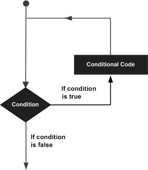

C - Quick Guide
C - Language Overview
C is a general purpose high level language that was originally developed by Dennis M. Ritchie to develop the Unix operating system at Bell Labs. C was originally first implemented on the DEC PDP-11 computer in 1972.
In 1978, Brian Kernighan and Dennis Ritchie produced the first publicly available description of C, now known as the K&R standard.
The UNIX operating system, the C compiler, and essentially all UNIX applications programs have been written in C. C has now become a widely used professional language for various reasons.
Easy to learn
Structured language
It produces efficient programs.
It can handle low-level activities.
It can be compiled on a variety of computer platforms.
Facts about C
C was invented to write an operating system called UNIX.
C is a successor of B language which was introduced around 1970
The language was formalized in 1988 by the American National Standard Institue (ANSI).
The UNIX OS was totally written in C By 1973.
Today C is the most widely used and popular System Programming Language.
Most of the state of the art software have been implemented using C.
Today's most popular Linux OS and RBDMS MySQL have been written in C.
C - Environment Setup
Before you start doing programming using C programming language, you need following two software's available on your computer, (a) Text Editor and (b) The C Compiler.
Text Editor:
This will be used to type your program. Examples of few editors include Windows Notepad, OS Edit command, Brief, Epsilon, EMACS, and vim or vi
Name and version of text editor can vary on different operating systems. For exampe Notepad will be used on Windows and vim or vi can be used on windows as well as Linux, or Unix.
The files you create with your editor are called source files and contain program source code. The source files for C programs are typically named with the extension .c.
Before starting your programming, make sure you have one text editor in place and you have enough experience to write a computer program, save it in a file, compile it and finally execute it.
The C Compiler:
The source code written in source file is the human readable source for your program. It needs to be "compiled", to turn into machine language so that your cpu can actually execute the program as per instructions given.
This C programming language compiler will be used to compile your source code into final executable program. I assume you have basic knowledge about a programming language compiler.
Most frequently used and free available compiler is GNU C/C++ compiler, otherwise you can have compilers either from HP or Solaris if you have respective Operating Systems.
Following section guides you on how to install GNU C/C++ compiler on various OS. I'm mentioning C/C++ together because GNU gcc compiler works for both C and C++ programming languages.
Installation on Unix/Linux
If you are using Linux or Unix then check whether GCC is installed on your system by entering the following command from the command line:
$ gcc -v
If you have GNU compiler installed on your machine then it should print a message something as follows:
Using built-in specs. Target: i386-redhat-linux Configured with: ../configure --prefix=/usr ....... Thread model: posix gcc version 4.1.2 20080704 (Red Hat 4.1.2-46)
If GCC is not installed, then you will have to install it yourself using the detailed instructions available at http://gcc.gnu.org/install/
This tutorial has been written based on Linux and all the given examples have been compiled on Cent OS flavour of Linux system.
Installation on Mac OS
If you use Mac OS X, the easiest way to obtain GCC is to download the Xcode development environment from Apple's web site and follow the simple installation instructions. Once you have Xcode setup, you will be able to use GNU compiler for C/C++.
Xcode is currently available at developer.apple.com/technologies/tools/.
Installation on Windows
To install GCC at Windows you need to install MinGW. To install MinGW, go to the MinGW homepage, www.mingw.org, and follow the link to the MinGW download page. Download the latest version of the MinGW installation program, which should be named MinGW-<version>.exe.
While installing MinWG, at a minimum, you must install gcc-core, gcc-g++, binutils, and the MinGW runtime, but you may wish to install more.
Add the bin subdirectory of your MinGW installation to your PATH environment variable so that you can specify these tools on the command line by their simple names.
When the installation is complete, you will be able to run gcc, g++, ar, ranlib, dlltool, and several other GNU tools from the Windows command line.
C - Program Structure
Before we study basic building blocks of the C programming language, let us look a bare minimum C program structure so that we can take it as a reference in upcoming chapters.
C Hello World Example
A C program basically consists of the following parts:
Preprocessor Commands
Functions
Variables
Statements & Expressions
Comments
Let us look at a simple code that would print the words "Hello World":
#include <stdio.h>
int main()
{
/* my first program in C */
printf("Hello, World! \n");
return 0;
}
Let us look various parts of the above program:
The first line of the program #include <stdio.h> is a preprocessor command which tells a C compiler to include stdio.h file before going to actual compilation.
The next line int main() is the main function where program execution begins.
The next line /*...*/ will be ignored by the compiler and it has been put to add additional comments in the program. So such lines are called comments in the program.
The next line printf(...) is another function available in C which causes the message "Hello, World!" to be displayed on the screen.
The next line return 0; terminates main()function and returns the value 0.
Compile & Execute C Program:
Lets look at how to save the source code in a file, and how to compile and run it. Following are the simple steps:
Open a text editor and add the above mentioned code.
Save the file as hello.c
Open a command prompt and go to the directory where you saved the file.
Type gcc hello.c and press enter to compile your code.
If there are no errors in your code the command prompt will take you to the next line and would generate a.out executable file.
Now type a.out to execute your program.
You will be able to see "Hello World" printed on the screen
$ gcc hello.c $ ./a.out Hello, World!
Make sure that gcc compiler is in your path and that you are running it in the directory containing source file hello.c.
C - Basic Syntax
You have seen a basic structure of C program, so it will be easy to understand other basic building blocks of the C programming language.
Tokens in C
A C program consists of various tokens and a token is either a keyword, an identifier, a constant, a string literal, or a symbol. For example, the following C statement consists of five tokens:
printf("Hello, World! \n");
The individual tokens are:
printf ( "Hello, World! \n" ) ;
Semicolons ;
In C program, the semicolon is a statement terminator. That is, each individual statement must be ended with a semicolon. It indicates the end of one logical entity.
For example, following are two different statements:
printf("Hello, World! \n");
return 0;
Comments
Comments are like helping text in your C program and they are ignored by the compiler. They start with /* and terminates with the characters */ as shown below:
/* my first program in C */
You can not have comments with in comments and they do not occur within a string or character literals.
Identifiers
A C identifier is a name used to identify a variable, function, or any other user-defined item. An identifier starts with a letter A to Z or a to z or an underscore _ followed by zero or more letters, underscores, and digits (0 to 9).
C does not allow punctuation characters such as @, $, and % within identifiers. C is a case sensitive programming language. Thus Manpower and manpower are two different identifiers in C. Here are some examples of acceptable identifiers:
mohd zara abc move_name a_123 myname50 _temp j a23b9 retVal
Keywords
The following list shows the reserved words in C. These reserved words may not be used as constant or variable or any other identifier names.
| auto | else | long | switch |
| break | enum | register | typedef |
| case | extern | return | union |
| char | float | short | unsigned |
| const | for | signed | void |
| continue | goto | sizeof | volatile |
| default | if | static | while |
| do | int | struct | _Packed |
| double |
Whitespace in C
A line containing only whitespace, possibly with a comment, is known as a blank line, and a C compiler totally ignores it.
Whitespace is the term used in C to describe blanks, tabs, newline characters and comments. Whitespace separates one part of a statement from another and enables the compiler to identify where one element in a statement, such as int, ends and the next element begins. Therefore, in the following statement:
int age;
There must be at least one whitespace character (usually a space) between int and age for the compiler to be able to distinguish them. On the other hand, in the following statement
fruit = apples + oranges; // get the total fruit
No whitespace characters are necessary between fruit and =, or between = and apples, although you are free to include some if you wish for readability purpose.
C - Data Types
In the C programming language, data types refers to an extensive system used for declaring variables or functions of different types. The type of a variable determines how much space it occupies in storage and how the bit pattern stored is interpreted.
The types in C can be classified as follows:
| S.N. | Types and Description |
|---|---|
| 1 | Basic Types: They are arithmetic types and consists of the two types: (a) integer types and (b) floating-point types. |
| 2 | Enumerated types: They are again arithmetic types and they are used to define variables that can only be assigned certain discrete integer values throughout the program. |
| 3 | The type void: The type specifier void indicates that no value is available. |
| 4 | Derived types: They include (a) Pointer types, (b) Array types, (c) Structure types, (d) Union types and (e) Function types. |
The array types and structure types are referred to collectively as the aggregate types. The type of a function specifies the type of the function's return value. We will see basic types in the following section where as other types will be covered in the upcoming chapters.
Integer Types
Following table gives you detail about standard integer types with its storage sizes and value ranges:
| Type | Storage size | Value range |
|---|---|---|
| char | 1 byte | -128 to 127 or 0 to 255 |
| unsigned char | 1 byte | 0 to 255 |
| signed char | 1 byte | -128 to 127 |
| int | 2 or 4 bytes | -32,768 to 32,767 or -2,147,483,648 to 2,147,483,647 |
| unsigned int | 2 or 4 bytes | 0 to 65,535 or 0 to 4,294,967,295 |
| short | 2 bytes | -32,768 to 32,767 |
| unsigned short | 2 bytes | 0 to 65,535 |
| long | 4 bytes | -2,147,483,648 to 2,147,483,647 |
| unsigned long | 4 bytes | 0 to 4,294,967,295 |
To get the exact size of a type or a variable on a particular platform, you can use the sizeof operator. The expressions sizeof(type) yields the storage size of the object or type in bytes.
Floating-Point Types
Following table gives you detail about standard float-point types with storage sizes and value ranges and their precision:
| Type | Storage size | Value range | Precision |
|---|---|---|---|
| float | 4 byte | 1.2E-38 to 3.4E+38 | 6 decimal places |
| double | 8 byte | 2.3E-308 to 1.7E+308 | 15 decimal places |
| long double | 10 byte | 3.4E-4932 to 1.1E+4932 | 19 decimal places |
The header file float.h defines macros that allow you to use these values and other details about the binary representation of real numbers in your programs.
The void Type
The void type specifies that no value is available. It is used in three kinds of situations:
| S.N. | Types and Description |
|---|---|
| 1 | Function returns as void There are various functions in C who do not return value or you can say they return void. A function with no return value has the return type as void. For example void exit (int status); |
| 2 | Function arguments as void There are various functions in C who do not accept any parameter. A function with no parameter can accept as a void. For example int rand(void); |
| 3 | Pointers to void A pointer of type void * represents the address of an object, but not its type. For example a memory allocation function void *malloc( size_t size ); returns a pointer to void which can be casted to any data type. |
The void type may not be understood to you at this point, so let us proceed and we will cover these concepts in upcoming chapters.
C - Variables
A variable is nothing but a name given to a storage area that our programs can manipulate. Each variable in C has a specific type, which determines the size and layout of the variable's memory; the range of values that can be stored within that memory; and the set of operations that can be applied to the variable.
The name of a variable can be composed of letters, digits, and the underscore character. It must begin with either a letter or an underscore. Upper and lowercase letters are distinct because C is case-sensitive. Based on the basic types explained in previous chapter, there will be following basic variable types:
| Type | Description |
|---|---|
| char | Typically a single octet(one byte). This is an integer type. |
| int | The most natural size of integer for the machine. |
| float | A single-precision floating point value. |
| double | A double-precision floating point value. |
| void | Represents the absence of type. |
C programming language also allows to define various other type of variables which we will cover in subsequent chapters like Enumeration, Pointer, Array, Structure, Union etc. For this chapter, let us study only basic variable types.
Variable Declaration in C
All variables must be declared before we use them in C program, although certain declarations can be made implicitly by content. A declaration specifies a type, and contains a list of one or more variables of that type as follows:
type variable_list;
Here, type must be a valid C data type including char, int, float, double, or any user defined data type etc., and variable_list may consist of one or more identifier names separated by commas. Some valid variable declarations are shown here:
int i, j, k; char c, ch; float f, salary; double d;
A variable declaration does not allocate any memory space for the variable but a variable definition allocate required memory space for that variable. A variable declaration with an initial value as shown below will become variable definition and required memory is allocated for the variable.
int i = 100;
An extern declaration is not a definition and does not allocate storage. In effect, it claims that a definition of the variable exists some where else in the program. A variable can be declared multiple times in a program, but it must be defined only once. Following is the declaration of a variable with extern keyword:
extern int i;
Variable Initialization in C
Variables are initialized (assigned an value) with an equal sign followed by a constant expression. The general form of initialization is:
variable_name = value;
Variables can be initialized (assigned an initial value) in their declaration. The initializer consists of an equal sign followed by a constant expression as follows:
type variable_name = value;
Some examples are:
int d = 3, f = 5; /* initializing d and f. */ byte z = 22; /* initializes z. */ double pi = 3.14159; /* declares an approximation of pi. */ char x = 'x'; /* the variable x has the value 'x'. */
It is a good programming practice to initialize variables properly otherwise, sometime program would produce unexpected result.
Lvalues and Rvalues in C:
There are two kinds of expressions in C:
lvalue : An expression that is an lvalue may appear as either the left-hand or right-hand side of an assignment.
rvalue : An expression that is an rvalue may appear on the right- but not left-hand side of an assignment.
Variables are lvalues and so may appear on the left-hand side of an assignment. Numeric literals are rvalues and so may not be assigned and can not appear on the left-hand side. Following is a valid statement:
int g = 20;
But following is not a valid statement and would generate compile-time error:
10 = 20;
C - Constants and Literals
The constants refer to fixed values that the program may not alter during its execution. These fixed values are also called literals.
Constants can be of any of the basic data types like an integer constant, a floating constant, a character constant, or a string literal. There are also enumeration constants as well.
The constants are treated just like regular variables except that their values cannot be modified after their definition.
Integer literals
An integer literal can be a decimal, octal, or hexadecimal constant. A prefix specifies the base or radix: 0x or 0X for hexadecimal, 0 for octal, and nothing for decimal.
An integer literal can also have a suffix that is a combination of U and L, for unsigned and long, respectively. The suffix can be uppercase or lowercase and can be in any order.
Here are some examples of integer literals:
212 /* Legal */ 215u /* Legal */ 0xFeeL /* Legal */ 078 /* Illegal: 8 is not an octal digit */ 032UU /* Illegal: cannot repeat a suffix */
Following are other examples of various type of Integer literals:
85 /* decimal */ 0213 /* octal */ 0x4b /* hexadecimal */ 30 /* int */ 30u /* unsigned int */ 30l /* long */ 30ul /* unsigned long */
Floating-point literals
A floating-point literal has an integer part, a decimal point, a fractional part, and an exponent part. You can represent floating point literals either in decimal form or exponential form.
While representing using decimal form, you must include the decimal point, the exponent, or both and while representing using exponential form, you must include the integer part, the fractional part, or both. The signed exponent is introduced by e or E.
Here are some examples of floating-point literals:
3.14159 /* Legal */ 314159E-5L /* Legal */ 510E /* Illegal: incomplete exponent */ 210f /* Illegal: no decimal or exponent */ .e55 /* Illegal: missing integer or fraction */
Character constants
Character literals are enclosed in single quotes e.g., 'x' and can be stored in a simple variable of char type.
A character literal can be a plain character (e.g., 'x'), an escape sequence (e.g., '\t'), or a universal character (e.g., '\u02C0').
There are certain characters in C when they are proceeded by a back slash they will have special meaning and they are used to represent like newline (\n) or tab (\t). Here you have a list of some of such escape sequence codes:
| Escape sequence | Meaning |
|---|---|
| \\ | \ character |
| \' | ' character |
| \" | " character |
| \? | ? character |
| \a | Alert or bell |
| \b | Backspace |
| \f | Form feed |
| \n | Newline |
| \r | Carriage return |
| \t | Horizontal tab |
| \v | Vertical tab |
| \ooo | Octal number of one to three digits |
| \xhh . . . | Hexadecimal number of one or more digits |
String literals
String literals or constants are enclosed in double quotes "". A string contains characters that are similar to character literals: plain characters, escape sequences, and universal characters.
You can break a long lines into multiple lines using string literals and separating them using whitespaces.
Here are some examples of string literals. All the three forms are identical strings.
"hello, dear" "hello, \ dear" "hello, " "d" "ear"
Defining Constants
There are two simple ways in C to define constants:
Using #define preprocessor.
Using const keyword.
The const Keyword
You can use const prefix to declare constants with a specific type as follows:
const type variable = value;
C - Storage Classes
A storage class defines the scope (visibility) and life time of variables and/or functions within a C Program. These specifiers precede the type that they modify. There are following storage classes which can be used in a C Program
auto
register
static
extern
The auto Storage Class
The auto storage class is the default storage class for all local variables.
{
int mount;
auto int month;
}
The example above defines two variables with the same storage class, auto can only be used within functions, i.e. local variables.
The register Storage Class
The register storage class is used to define local variables that should be stored in a register instead of RAM. This means that the variable has a maximum size equal to the register size (usually one word) and can't have the unary '&' operator applied to it (as it does not have a memory location).
{
register int miles;
}
The register should only be used for variables that require quick access such as counters. It should also be noted that defining 'register' goes not mean that the variable will be stored in a register. It means that it MIGHT be stored in a register depending on hardware and implementation restrictions.
The static Storage Class
The static storage class instructs the compiler to keep a local variable in existence during the lifetime of the program instead of creating and destroying it each time it comes into and goes out of scope. Therefore, making local variables static allows them to maintain their values between function calls.
The static modifier may also be applied to global variables. When this is done, it causes that variable's scope to be restricted to the file in which it is declared.
In C programming, when static is used on a class data member, it causes only one copy of that member to be shared by all objects of its class.
The extern Storage Class
The extern storage class is used to give a reference of a global variable that is visible to ALL the program files. When you use 'extern' the variable cannot be initialized as all it does is point the variable name at a storage location that has been previously defined.
When you have multiple files and you define a global variable or function which will be used in other files also, then extern will be used in another file to give reference of defined variable or function. Just for understanding extern is used to declare a global variable or function in another files.
The extern modifier is most commonly used when there are two or more files sharing the same global variables or functions.
C - Operators
This tutorial will explain the arithmetic, relational, and logical, bitwise, assignment and other operators one by one.
Arithmetic Operators
Following table shows all the arithmetic operators supported by C language. Assume variable A holds 10 and variable B holds 20 then:
| Operator | Description | Example |
|---|---|---|
| + | Adds two operands | A + B will give 30 |
| - | Subtracts second operand from the first | A - B will give -10 |
| * | Multiply both operands | A * B will give 200 |
| / | Divide numerator by de-numerator | B / A will give 2 |
| % | Modulus Operator and remainder of after an integer division | B % A will give 0 |
| ++ | Increment operator increases integer value by one | A++ will give 11 |
| -- | Decrement operator decreases integer value by one | A-- will give 9 |
Relational Operators
Following table shows all the relational operators supported by C language. Assume variable A holds 10 and variable B holds 20 then:
| Operator | Description | Example |
|---|---|---|
| == | Checks if the value of two operands is equal or not, if yes then condition becomes true. | (A == B) is not true. |
| != | Checks if the value of two operands is equal or not, if values are not equal then condition becomes true. | (A != B) is true. |
| > | Checks if the value of left operand is greater than the value of right operand, if yes then condition becomes true. | (A > B) is not true. |
| < | Checks if the value of left operand is less than the value of right operand, if yes then condition becomes true. | (A < B) is true. |
| >= | Checks if the value of left operand is greater than or equal to the value of right operand, if yes then condition becomes true. | (A >= B) is not true. |
| <= | Checks if the value of left operand is less than or equal to the value of right operand, if yes then condition becomes true. | (A <= B) is true. |
Logical Operators
Following table shows all the logical operators supported by C language. Assume variable A holds 1 and variable B holds 0 then:
| Operator | Description | Example |
|---|---|---|
| && | Called Logical AND operator. If both the operands are non zero then condition becomes true. | (A && B) is false. |
| || | Called Logical OR Operator. If any of the two operands is non zero then condition becomes true. | (A || B) is true. |
| ! | Called Logical NOT Operator. Use to reverses the logical state of its operand. If a condition is true then Logical NOT operator will make false. | !(A && B) is true. |
Bitwise Operators
The Bitwise operators supported by C language are listed in the following table. Assume variable A holds 60 and variable B holds 13 then:
| Operator | Description | Example |
|---|---|---|
| & | Binary AND Operator copies a bit to the result if it exists in both operands. | (A & B) will give 12 which is 0000 1100 |
| | | Binary OR Operator copies a bit if it exists in either operand. | (A | B) will give 61 which is 0011 1101 |
| ^ | Binary XOR Operator copies the bit if it is set in one operand but not both. | (A ^ B) will give 49 which is 0011 0001 |
| ~ | Binary Ones Complement Operator is unary and has the effect of 'flipping' bits. | (~A ) will give -60 which is 1100 0011 |
| << | Binary Left Shift Operator. The left operands value is moved left by the number of bits specified by the right operand. | A << 2 will give 240 which is 1111 0000 |
| >> | Binary Right Shift Operator. The left operands value is moved right by the number of bits specified by the right operand. | A >> 2 will give 15 which is 0000 1111 |
Assignment Operators
There are following assignment operators supported by C language:
| Operator | Description | Example |
|---|---|---|
| = | Simple assignment operator, Assigns values from right side operands to left side operand | C = A + B will assign value of A + B into C |
| += | Add AND assignment operator, It adds right operand to the left operand and assign the result to left operand | C += A is equivalent to C = C + A |
| -= | Subtract AND assignment operator, It subtracts right operand from the left operand and assign the result to left operand | C -= A is equivalent to C = C - A |
| *= | Multiply AND assignment operator, It multiplies right operand with the left operand and assign the result to left operand | C *= A is equivalent to C = C * A |
| /= | Divide AND assignment operator, It divides left operand with the right operand and assign the result to left operand | C /= A is equivalent to C = C / A |
| %= | Modulus AND assignment operator, It takes modulus using two operands and assign the result to left operand | C %= A is equivalent to C = C % A |
| <<= | Left shift AND assignment operator | C <<= 2 is same as C = C << 2 |
| >>= | Right shift AND assignment operator | C >>= 2 is same as C = C >> 2 |
| &= | Bitwise AND assignment operator | C &= 2 is same as C = C & 2 |
| ^= | bitwise exclusive OR and assignment operator | C ^= 2 is same as C = C ^ 2 |
| |= | bitwise inclusive OR and assignment operator | C |= 2 is same as C = C | 2 |
Misc Operators ↦ sizeof & ternary
There are few other important operators including sizeof and ? : supported by C Language.
| Operator | Description | Example |
|---|---|---|
| sizeof() | Returns the size of an variable. | sizeof(a), where a is interger, will return 4. |
| & | Returns the address of an variable. | &a; will give actaul address of the variable. |
| * | Pointer to a variable. | *a; will pointer to a variable. |
| ? : | Conditional Expression | If Condition is true ? Then value X : Otherwise value Y |
Operators Precedence in C
Here operators with the highest precedence appear at the top of the table, those with the lowest appear at the bottom. Within an expression, higher precedence operators will be evaluated first.
| Category | Operator | Associativity |
|---|---|---|
| Postfix | () [] -> . ++ - - | Left to right |
| Unary | + - ! ~ ++ - - (type)* & sizeof | Right to left |
| Multiplicative | * / % | Left to right |
| Additive | + - | Left to right |
| Shift | << >> | Left to right |
| Relational | < <= > >= | Left to right |
| Equality | == != | Left to right |
| Bitwise AND | & | Left to right |
| Bitwise XOR | ^ | Left to right |
| Bitwise OR | | | Left to right |
| Logical AND | && | Left to right |
| Logical OR | || | Left to right |
| Conditional | ?: | Right to left |
| Assignment | = += -= *= /= %=>>= <<= &= ^= |= | Right to left |
| Comma | , | Left to right |
C - Decision Making
Decision making structures require that the programmer specify one or more conditions to be evaluated or tested by the program, along with a statement or statements to be executed if the condition is determined to be true, and optionally, other statements to be executed if the condition is determined to be false.
Following is the general from of a typical decision making structure found in most of the programming languages:

C programming language assumes any non-zero and non-null values as true and if it is either zero or null then it is assumed as false value.
C programming language provides following types of decision making statements. Click the following links to check their detail.
| Statement | Description |
|---|---|
| if statement | An if statement consists of a boolean expression followed by one or more statements. |
| if...else statement | An if statement can be followed by an optional else statement, which executes when the boolean expression is false. |
| switch statement | A switch statement allows a variable to be tested for equality against a list of values. |
| nested if statements | You can use one if or else if statement inside another if or else if statement(s). |
| nested switch statements | You can use one swicth statement inside another switch statement(s). |
C - Loops
There may be a situation when you need to execute a block of code several number of times. In general statements are executed sequentially: The first statement in a function is executed first, followed by the second, and so on.
Programming languages provide various control structures that allow for more complicated execution paths.
A loop statement allows us to execute a statement or group of statements multiple times and following is the general from of a loop statement in most of the programming languages:
C programming language provides following types of loop to handle looping requirements. Click the following links to check their detail.
| Loop Type | Description |
|---|---|
| while loop | Repeats a statement or group of statements while a given condition is true. It tests the condition before executing the loop body. |
| for loop | Execute a sequence of statements multiple times and abbreviates the code that manages the loop variable. |
| do...while loop | Like a while statement, except that it tests the condition at the end of the loop body |
| nested loops | You can use one or more loop inside any another while, for or do..while loop. |
Loop Control Statements:
Loop control statements change execution from its normal sequence. When execution leaves a scope, all automatic objects that were created in that scope are destroyed.
C supports the following control statements. Click the following links to check their detail.
| Control Statement | Description |
|---|---|
| break statement | Terminates the loop or switch statement and transfers execution to the statement immediately following the loop or switch. |
| continue statement | Causes the loop to skip the remainder of its body and immediately retest its condition prior to reiterating. |
| goto statement | Transfers control to the labeled statement. Though it is not advised to use goto statement in your program. |
C - Functions
A function is a group of statements that together perform a task. Every C program has at least one function which is main(), and all the most trivial programs can define additional functions.
You can divide up your code into separate functions. How you divide up your code among different functions is up to you, but logically the division usually is so each function performs a specific task.
A function declaration tells the compiler about a function's name, return type, and parameters. A function definition provides the actual body of the function.
The C standard library provides numerous built-in functions that your program can call. For example, function strcat() to concatenate two strings, function memcpy() to copy one memory location to another location and many more functions.
A function is knows as with various names like a method or a sub-routine or a procedure etc.
Defining a Function:
The general form of a function definition in C programming language is as follows:
return_type function_name( parameter list )
{
body of the function
}
A function definition in C programming language consists of a function header and a function body. Here are all the parts of a function:
Return Type: A function may return a value. The return_type is the data type of the value the function returns. Some functions perform the desired operations without returning a value. In this case, the return_type is the keyword void.
Function Name: This is the actual name of the function. The function name and the parameter list together constitute the function signature.
Parameters: A parameter is like a placeholder. When a function is invoked, you pass a value to the parameter. This value is referred to as actual parameter or argument. The parameter list refers to the type, order, and number of the parameters of a function. Parameters are optional; that is, a function may contain no parameters.
Function Body: The function body contains a collection of statements that define what the function does.
Example:
Following is the xample of implementing a function the C programming language:
#include <stdio.h>
/* function declaration */
int max(int num1, int num2);
int main ()
{
/* local variable definition */
int a = 100;
int b = 200;
int ret;
/* calling a function to get max value */
ret = max(a, b);
printf( "Max value is : %d\n", ret );
return 0;
}
/* function returning the max between two numbers */
int max(int num1, int num2)
{
/* local variable declaration */
int result;
if (num1 > num2)
result = num1;
else
result = num2;
return result;
}
I kept max() function along with main() function and complied the source code. While running final executable, it would produce following result:
Max value is : 200
C - Scope Rules
A scope in any programming is a region of the program where a defined variable can have its existence and beyond that variable can not be accessed. There are three places where variables can be declared in C programming language:
Inside a function or a block which is called local variables,
Outside of all functions which is called global variables.
In the definition of function parameters which is called formal parameters.
Let us explain what are local and global variables and formal parameters.
Local Variables
Variables that are declared inside a function or block are called local variables. They can be used only by statements that are inside that function or block of code. Local variables are not known to functions outside their own. Following is the example using local variables.
Global Variables
Global variables are defined outside of a function, usually on top of the program. The global variables will hold their value throughout the lifetime of your program and they can be accessed inside any of the functions defined for the program.
A global variable can be accessed by any function. That is, a global variable is available for use throughout your entire program after its declaration.
Formal Parameters
A function parameters, formal parameters, are treated as local variables with-in that function and they will take preference over the global variables.
C - Arrays
C programming language provides a data structure called the array, which can store a fixed-size sequential collection of elements of the same type. An array is used to store a collection of data, but it is often more useful to think of an array as a collection of variables of the same type.
Instead of declaring individual variables, such as number0, number1, ..., and number99, you declare one array variable such as numbers and use numbers[0], numbers[1], and ..., numbers[99] to represent individual variables. A specific element in an array is accessed by an index.
All arrays consist of contiguous memory locations. The lowest address corresponds to the first element and the highest address to the last element.

Declaring Arrays
To declare an array in C, a programmer specifies the type of the elements and the number of elements required by an array as follows:
type arrayName [ arraySize ];
This is called a single-dimensional array. The arraySize must be an integer constant greater than zero and type can be any valid C data type. For example, to declare a 10-element array called balance of type double, use this statement:
double balance[10];
Now balance is avariable array which is sufficient to hold upto 10 double numbers.
Initializing Arrays
You can initialize array in C either one by one or using a single statement as follows:
double balance[5] = {1000.0, 2.0, 3.4, 17.0, 50.0};
The number of values between braces { } can not be larger than the number of elements that we declare for the array between square brackets [ ]. Following is an example to assign a single element of the array:
If you omit the size of the array, an array just big enough to hold the initialization is created. Therefore, if you write:
double balance[] = {1000.0, 2.0, 3.4, 17.0, 50.0};
You will create exactly the same array as you did in the previous example.
balance[4] = 50.0;
The above statement assigns element number 5th in the array a value of 50.0. Array with 4th index will be 5th ie. last element because all arrays have 0 as the index of their first element which is also called base index. Following is the pictorial representaion of the same array we discussed above:

Accessing Array Elements
An element is accessed by indexing the array name. This is done by placing the index of the element within square brackets after the name of the array. For example:
double salary = balance[9];
The above statement will take 10th element from the array and assign the value to salary variable. Following is an example which will use all the above mentioned three concepts viz. declaration, assignment and accessing arrays:
#include <stdio.h>
int main ()
{
int n[ 10 ]; /* n is an array of 10 integers */
int i,j;
/* initialize elements of array n to 0 */
for ( i = 0; i < 10; i++ )
{
n[ i ] = i + 100; /* set element at location i to i + 100 */
}
/* output each array element's value */
for (j = 0; j < 10; j++ )
{
printf("Element[%d] = %d\n", j, n[j] );
}
return 0;
}
When the above code is compiled and executed, it produces following result:
Element[0] = 100 Element[1] = 101 Element[2] = 102 Element[3] = 103 Element[4] = 104 Element[5] = 105 Element[6] = 106 Element[7] = 107 Element[8] = 108 Element[9] = 109
C - Pointers
A pointer is a variable whose value is the address of another variable ie. direct address of the memory location. Like any variable or constant, you must declare a pointer before you can use it to store any variable address. The general form of a pointer variable declaration is:
type *var-name;
Here, type is the pointer's base type; it must be a valid C data type and var-name is the name of the pointer variable. The asterisk * you used to declare a pointer is the same asterisk that you use for multiplication. However, in this statement the asterisk is being used to designate a variable as a pointer. Following are the valid pointer declaration:
int *ip; /* pointer to an integer */ double *dp; /* pointer to a double */ float *fp; /* pointer to a float */ char *ch /* pointer to a character */
The actual data type of the value of all pointers, whether integer, float, character, or otherwise, is the same, a long hexadecimal number that represents a memory address. The only difference between pointers of different data types is the data type of the variable or constant that the pointer points to.
How to use Pointers?
There are few important operations which we will do with the help of pointers very frequently. (a) we define a pointer variables (b) assign the address of a variable to a pointer and (c) finally access the value at the address available in the pointer variable. This is done by using unary operator * that returns the value of the variable located at the address specified by its operand. Following example makes use of these operations:
#include <stdio.h>
int main ()
{
int var = 20; /* actual variable declaration */
int *ip; /* pointer variable declaration */
ip = &var; /* store address of var in pointer variable*/
printf("Address of var variable: %x\n", &var );
/* address stored in pointer variable */
printf("Address stored in ip variable: %x\n", ip );
/* access the value using the pointer */
printf("Value of *ip variable: %d\n", *ip );
return 0;
}
When the above code is compiled and executed, it produces result something as follows:
Address of var variable: bffd8b3c Address stored in ip variable: bffd8b3c Value of *ip variable: 20
C - Strings
The string in C programming language is actually a one-dimensional array of characters which is terminated by a null character '\0'. Thus a null-terminated string contains the characters that comprise the string followed by a null.
The following declaration and initialization create a string consisting of the word "Hello". To hold the null character at the end of the array, the size of the character array containing the string is one more than the number of characters in the word "Hello."
char greeting[6] = {'H', 'e', 'l', 'l', 'o', '\0'};
If you follow the rule of array initialization then you can write the above statement as follows:
char greeting[] = "Hello";
Following is the memory presentation of above defined string in C/C++:
Actually, you do not place the null character at the end of a string constant. The C compiler automatically places the '\0' at the end of the string when it initializes the array. Let us try to print above mentioned string:
#include <stdio.h>
int main ()
{
char greeting[6] = {'H', 'e', 'l', 'l', 'o', '\0'};
printf("Greeting message: %s\n", greeting );
return 0;
}
When the above code is compiled and executed, it produces result something as follows:
Greeting message: Hello
C supports a wide range of functions that manipulate null-terminated strings:
| S.N. | Function & Purpose |
|---|---|
| 1 | strcpy(s1, s2); Copies string s2 into string s1. |
| 2 | strcat(s1, s2); Concatenates string s2 onto the end of string s1. |
| 3 | strlen(s1); Returns the length of string s1. |
| 4 | strcmp(s1, s2); Returns 0 if s1 and s2 are the same; less than 0 if s1<s2; greater than 0 if s1>s2. |
| 5 | strchr(s1, ch); Returns a pointer to the first occurrence of character ch in string s1. |
| 6 | strstr(s1, s2); Returns a pointer to the first occurrence of string s2 in string s1. |
C - Structures
C arrays allow you to define type of variables that can hold several data items of the same kind but structure is another user defined data type available in C programming, which allows you to combine data items of different kinds.
Structures are used to represent a record, Suppose you want to keep track of your books in a library. You might want to track the following attributes about each book:
Title
Author
Subject
Book ID
Defining a Structure
To define a structure, you must use the struct statement. The struct statement defines a new data type, with more than one member for your program. The format of the struct statement is this:
struct [structure tag]
{
member definition;
member definition;
...
member definition;
} [one or more structure variables];
The structure tag is optional and each member definition is a normal variable definition, such as int i; or float f; or any other valid variable definition. At the end of the structure's definition, before the final semicolon, you can specify one or more structure variables but it is optional. Here is the way you would declare the Book structure:
struct Books
{
char title[50];
char author[50];
char subject[100];
int book_id;
} book;
Accessing Structure Members
To access any member of a structure, we use the member access operator (.). The member access operator is coded as a period between the structure variable name and the structure member that we wish to access. You would use struct keyword to define variables of structure type. Following is the example to explain usage of structure:
#include <stdio.h>
#include <string.h>
struct Books
{
char title[50];
char author[50];
char subject[100];
int book_id;
};
int main( )
{
struct Books Book1; /* Declare Book1 of type Book */
struct Books Book2; /* Declare Book2 of type Book */
/* book 1 specification */
strcpy( Book1.title, "C Programming");
strcpy( Book1.author, "Nuha Ali");
strcpy( Book1.subject, "C Programming Tutorial");
Book1.book_id = 6495407;
/* book 2 specification */
strcpy( Book2.title, "Telecom Billing");
strcpy( Book2.author, "Zara Ali");
strcpy( Book2.subject, "Telecom Billing Tutorial");
Book2.book_id = 6495700;
/* print Book1 info */
printf( "Book 1 title : %s\n", Book1.title);
printf( "Book 1 author : %s\n", Book1.author);
printf( "Book 1 subject : %s\n", Book1.subject);
printf( "Book 1 book_id : %d\n", Book1.book_id);
/* print Book2 info */
printf( "Book 2 title : %s\n", Book2.title);
printf( "Book 2 author : %s\n", Book2.author);
printf( "Book 2 subject : %s\n", Book2.subject);
printf( "Book 2 book_id : %d\n", Book2.book_id);
return 0;
}
When the above code is compiled and executed, it produces following result:
Book 1 title : C Programming Book 1 author : Nuha Ali Book 1 subject : C Programming Tutorial Book 1 book_id : 6495407 Book 2 title : Telecom Billing Book 2 author : Zara Ali Book 2 subject : Telecom Billing Tutorial Book 2 book_id : 6495700
C - Unions
A union is a special data type available in C that enables you to store different data types in the same memory location. You can define a union with many members, but only one member can contain a value at any given time. Unions provide an efficient way of using the same memory location for multi-purpose.
Defining a Union
To define a union, you must use the union statement in very similar was as you did while defining structure. The union statement defines a new data type, with more than one member for your program. The format of the union statement is as follows:
union [union tag]
{
member definition;
member definition;
...
member definition;
} [one or more union variables];
The union tag is optional and each member definition is a normal variable definition, such as int i; or float f; or any other valid variable definition. At the end of the union's definition, before the final semicolon, you can specify one or more union variables but it is optional. Here is the way you would define a union type named Data which has the three members i, f, and str:
union Data
{
int i;
float f;
char str[20];
} data;
Now a variable of Data type can store an integer, a floating-point number, or a string of characters. This means that a single variable ie. same memory location can be used to store multiple types of data. You can use any built-in or user defined data types inside a union based on your requirement.
The memory occupied by a union will be large enough to hold the largest member of the union. For example, in above example Data type will occupy 20 bytes of memory space because this is the maximum space which can be occupied by character string.
Accessing Union Members
To access any member of a union, we use the member access operator (.) in similar way as you access structure members. The member access operator is coded as a period between the union variable name and the union member that we wish to access. You would use union keyword to define variables of union type.
C - Bit Fields
Suppose your C program contains a number of TRUE/FALSE variables grouped in a structure called status, as follows:
struct
{
unsigned int widthValidated;
unsigned int heightValidated;
} status;
This structure requires 8 bytes of memory space but in actual we are going to store either 0 or 1 in each of the variables. The C programming language offers a better way to utilize the memory space in such situation. If you are using such variables inside a structure then you can define the width of a variable which tells the C compiler that you are going to use only those number of bytes. For example above structure can be re-written as follows:
struct
{
unsigned int widthValidated : 1;
unsigned int heightValidated : 1;
} status;
Now the above structure will require 4 bytes of memory space for status variable but only 2 bits will be used to store the values. If you will use upto 32 variables each one with a width of 1 bit , then also status structure will use 4 bytes, but as soon as you will have 33 variables then it will allocate next slot of the memory and it will start using 64 bytes.
C - typedef
The C programming language provides a keyword called typedef which you can use to give a type a new name. Following is an example to define a term BYTE for one-byte numbers:
typedef unsigned char BYTE;
After this type definitions, the identifier BYTE can be used as an abbreviation for the type unsigned char, for example:.
BYTE b1, b2;
By convention, uppercase letters are used for these definitions to remind the user that the type name is really a symbolic abbreviation, but you can use lowercase, as follows:
typedef unsigned char byte;
You can use typedef to give a name to user defined data type as well.
C - Input & Output
When we are saying Input that means to feed some data into program. This can be given in the form of file or from command line. C programming language provides a set of built-in functions to read given input and feed it to the program as per requirement.
When we are saying Output that means to display some data on screen, printer or in any file. C programming language provides a set of built-in functions to output the data on the computer screen as well as you can save that data in text or binary files.
The Standard Files
C programming language treats all the devices as files. So devices such as the display are addressed in the same way as files and following three file are automatically opened when a program executes to provide access to the keyboard and screen.
| Standard File | File Pointer | Device |
|---|---|---|
| Standard input | stdin | Keyboard |
| Standard output | stdout | Screen |
| Standard error | stderr | Your screen |
The file points are the means to access the file for reading and writing purpose. This section will explain you how to read values from the screen and how to print the result on the screen.
The getchar() & putchar() functions
The int getchar(void) function reads the next available character from the screen and returns it as an integer. This function reads only single character at a time. You can use this method in the loop in case you want to read more than one characters from the screen.
The int putchar(int c) function puts the passed character on the screen and returns the same character. This function puts only single character at a time. You can use this method in the loop in case you want to display more than one characters on the screen.
The gets() & puts() functions
The char *gets(char *s) function reads a line from stdin into the buffer pointed to by s until either a terminating newline or EOF.
The int puts(const char *s) function writes the string s and a trailing newline to stdout.
The scanf() and printf() functions
The int scanf(const char *format, ...) function reads input from the standard input stream stdin and scans that input according to format provided.
The int printf(const char *format, ...) function writes output to the standard output stream stdout and produces output according to a format provided.
The format can be a simple constant string, but you can specify %s, %d, %c, %f etc to print or read strings, integer, character or float respectively. There are many other formatting options available which can be used based on requirements. For a complete detail you can refer to a man page for these function.
C - File I/O
A file represents a sequence of bytes, does not matter if it is a text file or binary file. C programming language provides access on high level functions as well as low level (OS level) calls to handle file on your storage devices. This chapter will take you through important calls for the file management.
Opening Files
You can use the fopen( ) function to create a new file or to open an existing file, this call will initialize an object of the type FILE, which contains all the information necessary to control the stream. Following is the prototype of this function call:
FILE *fopen( const char * filename, const char * mode );
Here filename is string literal which you will use to name your file and access mode can have one of the following values:
| Mode | Description |
|---|---|
| r | Opens an existing text file for reading purpose. |
| w | Opens a text file for writing, if it does not exist then a new file is created. Here your program will start writing content from the beginning of the file. |
| a | Opens a text file for writing in appending mode, if it does not exist then a new file is created. Here your program will start appending content in the existing file content. |
| r+ | Opens a text file for reading and writing both. |
| w+ | Opens a text file for reading and writing both. It first truncate the file to zero length if it exists otherwise create the file if it does not exist. |
| a+ | Opens a text file for reading and writing both. It creates the file if it does not exist. The reading will start from the beginning but writing can only be appended. |
If you are going to handle binary files then you will use below mentioned access modes instead of the above mentioned:
"rb", "wb", "ab", "ab+", "a+b", "wb+", "w+b", "ab+", "a+b"
Closing a File
To close a file, use the fclose( ) function. The prototype of this function is:
int fclose( FILE *fp );
The fclose( ) function returns zero on success, or EOF if there is an error in closing the file. This function actually, flushes any data still pending in the buffer to the file, closes the file, and releases any memory used for the file. The EOF is a constant defined in the header file stdio.h.
There are various functions provide by C standard library to read and write a file character by character or in the form of a fixed length string. Let us see few of the in the next section.
Writing a File
Following is the simplest function to write individual characters to a stream:
int fputc( int c, FILE *fp );
The function fputc() writes the character value of the argument c to the output stream referenced by fp. It returns the written character written on success otherwise EOF if there is an error. You can use the following functions to write a null-terminated string to a stream:
int fputs( const char *s, FILE *fp );
The function fputs() writes the string s to the output stream referenced by fp. It returns a non-negative value on success, otherwise EOF is returned in case of any error. You can use int fprintf(FILE *fp,const char *format, ...) function as well to write a string into a file.
Reading a File
Following is the simplest function to read a single character from a file:
int fgetc( FILE * fp );
The fgetc() function reads a character from the input file referenced by fp. The return value is the character read, or in case of any error it returns EOF. The following functions allow you to read a string from a stream:
char *fgets( char *buf, int n, FILE *fp );
The functions fgets() reads up to n - 1 characters from the input stream referenced by fp. It copies the read string into the buffer buf, appending a null character to terminate the string.
If this function encounters a newline character '\n' or the end of the file EOF before they have read the maximum number of characters, then it returns only the characters read up to that point including new line character. You can also use int fscanf(FILE *fp, const char *format, ...) function to read strings from a file but it stops reading after the first space character encounters.
Binary I/O Functions
There are following two functions which can be used for binary input and output:
size_t fread(void *ptr, size_t size_of_elements,
size_t number_of_elements, FILE *a_file);
size_t fwrite(const void *ptr, size_t size_of_elements,
size_t number_of_elements, FILE *a_file);
Both of these functions should be used to read or write blocks of memories - usually arrays or structures.
C - Preprocessors
The C Preprocessor is not part of the compiler, but is a separate step in the compilation process. In simplistic terms, a C Preprocessor is just a text substitution tool and they instruct compiler to do required pre-processing before actual compilation. We'll refer to the C Preprocessor as the CPP.
All preprocessor commands begin with a pound symbol (#). It must be the first nonblank character, and for readability, a preprocessor directive should begin in first column. Following section lists down all important preprocessor directives:
| Directive | Description |
|---|---|
| #define | Substitutes a preprocessor macro |
| #include | Inserts a particular header from another file |
| #undef | Undefines a preprocessor macro |
| #ifdef | Returns true if this macro is defined |
| #ifndef | Returns true if this macro is not defined |
| #if | Tests if a compile time condition is true |
| #else | The alternative for #if |
| #elif | #else an #if in one statement |
| #endif | Ends preprocessor conditional |
| #error | Prints error message on stderr |
| #pragma | Issues special commands to the compiler, using a standardized method |
Predefined Macros
ANSI C defines a number of macros. Although each one is available for your use in programming, the predefined macros should not be directly modified.
| Macro | Description |
|---|---|
| __DATE__ | The current date as a character literal in "MMM DD YYYY" format |
| __TIME__ | The current time as a character literal in "HH:MM:SS" format |
| __FILE__ | This contains the current filename as a string literal. |
| __LINE__ | This contains the current line number as a decimal constant. |
| __STDC__ | Defined as 1 when the compiler complies with the ANSI standard. |
C - Header Files
A header file is a file with extension .h which contains C function declarations and macro definitions and to be shared between several source files. There are two types of header files: the files that the programmer writes and the files that come with your compiler.
You request the use of a header file in your program by including it, with the C preprocessing directive #include like you have seen inclusion of stdio.h header file which comes along with your compiler.
Including a header file is equal to copying the content of the header file but we do not do it because it will be very much error-prone and it is not a good idea to copy the content of header file in the source files, specially if we have multiple source file comprising our program.
A simple practice in C or C++ programs is that we keep all the constants, macros, system wide global variables, and function prototypes in header files and include that header file wherever it is required.
Include Syntax
Both user and system header files are included using the preprocessing directive #include. It has following two forms:
#include <file>
This form is used for system header files. It searches for a file named file in a standard list of system directories. You can prepend directories to this list with the -I option while compiling your source code.
#include "file"
This form is used for header files of your own program. It searches for a file named file in the directory containing the current file. You can prepend directories to this list with the -I option while compiling your source code.
C - Type Casting
Typecasting is a way to convert a variable from one data type to another data type. For example if you want to store a long value into a simple integer then you can type cast long to int. You can convert values from one type to another explicitly using the cast operator as follows:
(type_name) expression
Integer Promotion
Integer promotion is the process by which values of integer type "smaller" than int or unsigned int are converted either to int or unsigned int. Consider an example of adding a character in an int:
#include <stdio.h>
main()
{
int i = 17;
char c = 'c'; /* ascii value is 99 */
int sum;
sum = i + c;
printf("Value of sum : %d\n", sum );
}
When the above code is compiled and executed, it produces the following result:
Value of sum : 116
Here value of sum is coming as 116 because compiler is doing integer promotion and converting the value of 'c' to ascii before peforming actual addition operation.
Usual Arithmetic Conversion
The usual arithmetic conversions are implicitly performed to cast their values in a common type. Compiler first performs integer promotion, if operands still have different types then they are converted to the type that appears highest in the following hierarchy:

The usual arithmetic conversions are not performed for the assignment operators, nor for the logical operators && and ||. Let us take following example to understand the concept:
#include <stdio.h>
main()
{
int i = 17;
char c = 'c'; /* ascii value is 99 */
float sum;
sum = i + c;
printf("Value of sum : %f\n", sum );
}
When the above code is compiled and executed, it produces the following result:
Value of sum : 116.000000
C - Error Handling
As such C programming does not provide direct support for error handling but being a system programming language, it provides you access at lower level in the form of return values. Most of the C or even Unix function calls return -1 or NULL in case of any error and sets an error code errno is set which is global variable and indicates an error occurred during any function call. You can find various error codes defined in <error.h> header file.
So a C programmer can check the returned values and can take appropriate action depending on the return value. As a good practice, developer should set errno to 0 at the time of initialization of the program. A value of 0 indicates that there is no error in the program.
The errno, perror() and strerror()
The C programming language provides perror() and strerror() functions which can be used to display the text message associated with errno.
The perror() function displays the string you pass to it, followed by a colon, a space, and then the textual representation of the current errno value.
The strerror() function, which returns a pointer to the textual representation of the current errno value.
Let's try to simulate an error condition and try to open a file which does not exist. Here I'm using both the functions to show the usage, but you can use one or more ways of printing your errors. Second important point to note is that you should use stderr file stream to output all the errors.
#include <stdio.h>
#include <errno.h>
#include <string.h>
extern int errno ;
int main ()
{
FILE * pf;
int errnum;
pf = fopen ("unexist.txt", "rb");
if (pf == NULL)
{
errnum = errno;
fprintf(stderr, "Value of errno: %d\n", errno);
perror("Error printed by perror");
fprintf(stderr, "Error opening file: %s\n", strerror( errnum ));
}
else
{
fclose (pf);
}
return 0;
}
When the above code is compiled and executed, it produces the following result:
Value of errno: 2 Error printed by perror: No such file or directory Error opening file: No such file or directory
C - Variable Arguments
Sometime you may come across a situation when you want to have a function which can take variable number of arguments i.e. parameters, instead of predefined number of parameters. The C programming language provides a solution for this situation and you are allowed to define a function which can accept variable number of parameters based on your requirement. The following example shows the usage:
#include <stdio.h>
#include <stdarg.h>
double average(int num,...)
{
va_list valist;
double sum = 0.0;
int i;
/* initialize valist for num number of arguments */
va_start(valist, num);
/* access all the arguments assigned to valist */
for (i = 0; i < num; i++)
{
sum += va_arg(valist, int);
}
/* clean memory reserved for valist */
va_end(valist);
return sum/num;
}
int main()
{
printf("Average of 2, 3, 4, 5 = %f\n", average(4, 2,3,4,5));
printf("Average of 5, 10, 15 = %f\n", average(3, 5,10,15));
}
When the above code is compiled and executed, it produces the following result. It should be noted that the function average() has been called twice and each time first argument represents the total number of variable arguments being passed. Only ellipses will be used to pass variable number of arguments.
Average of 2, 3, 4, 5 = 3.500000 Average of 5, 10, 15 = 10.000000
C - Memory Management
The C programming language provides several functions for memory allocation and management. These functions can be found in the <stdlib.h> header file.
| S.N. | Function and Description |
|---|---|
| 1 | void *calloc(int num, int size); This function allocates an array of num elements each of whose size in bytes will be size. |
| 2 | void free(void *address); This function release a block of memory block specified by address. |
| 3 | void *malloc(int num); This function allocates an array of num bytes and leave them initialized. |
| 4 | void *realloc(void *address, int newsize); This function re-allocates memory extending it upto newsize. |
C - Command Line Arguments
It is possible to pass some values from the command line to your C programs when they are executed. These values are called command line arguments and many times they are important for your program specially when you want to control your program from outside instead of hard coding those values inside the code.
The command line arguments are handled using main() function arguments where argc refers to the number of arguments passed, and argv[] is a pointer array which points to each argument passed to the program. Following is a simple example which checks if there is any argument supplied from the command line and take action accordingly:
#include <stdio.h>
int main( int argc, char *argv[] )
{
if( argc == 2 )
{
printf("The argument supplied is %s\n", argv[1]);
}
else if( argc > 2 )
{
printf("Too many arguments supplied.\n");
}
else
{
printf("One argument expected.\n");
}
}
When the above code is compiled and executed with a single argument, it produces the following result.
$./a.out testing The argument supplied is testing